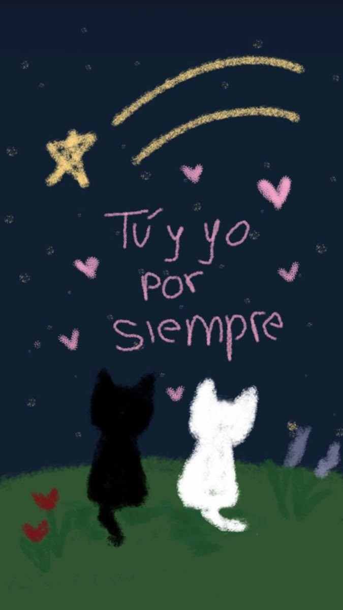
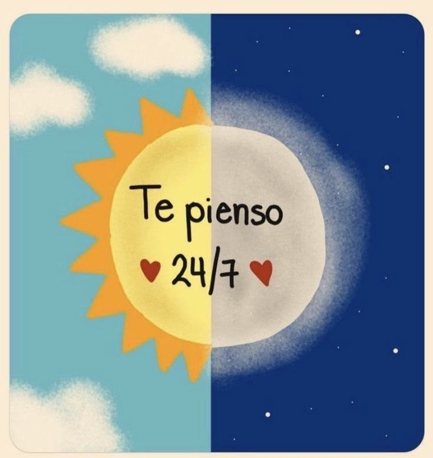
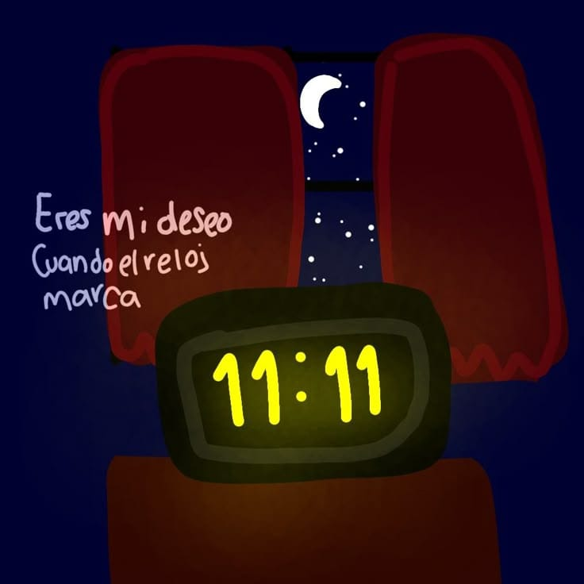
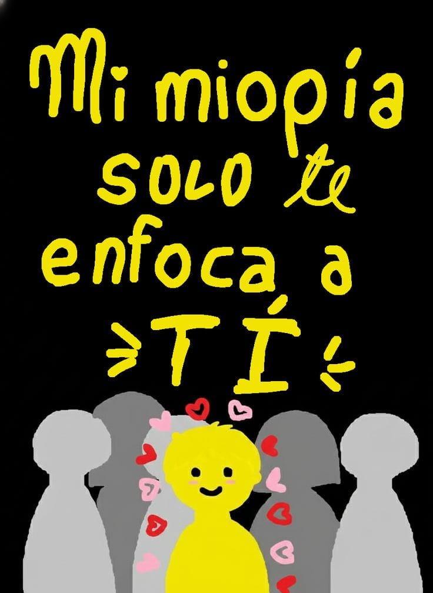
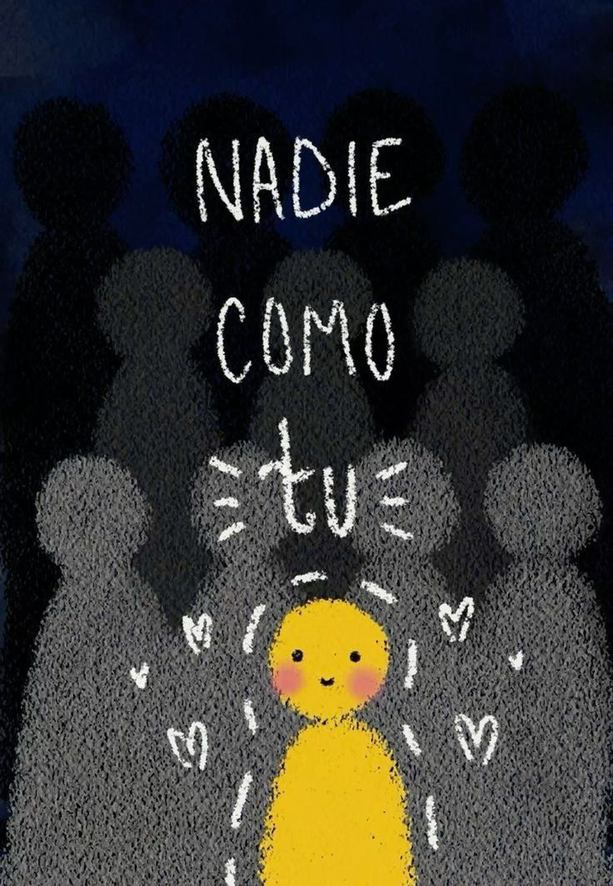
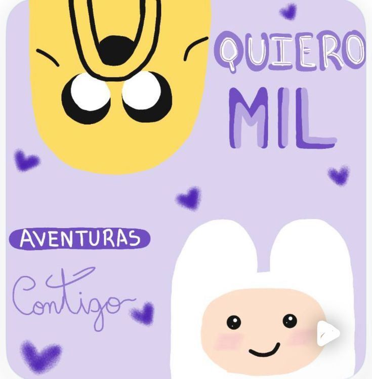
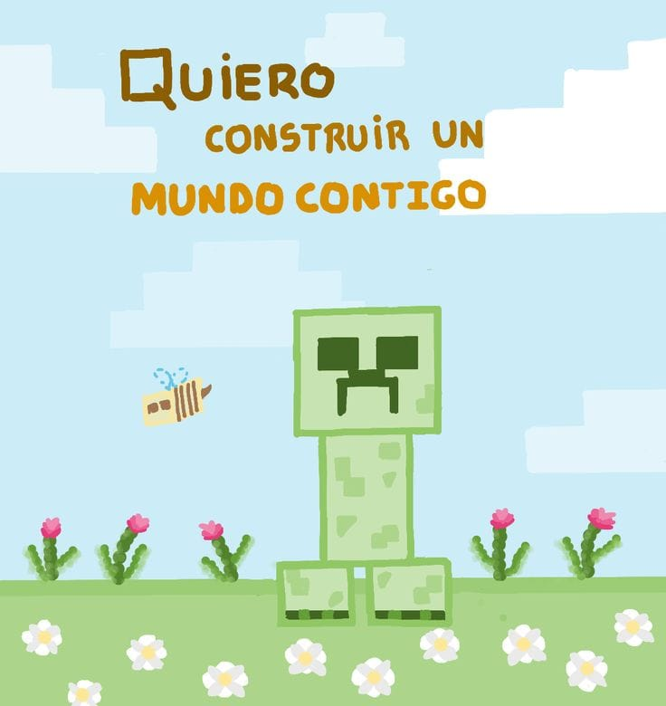
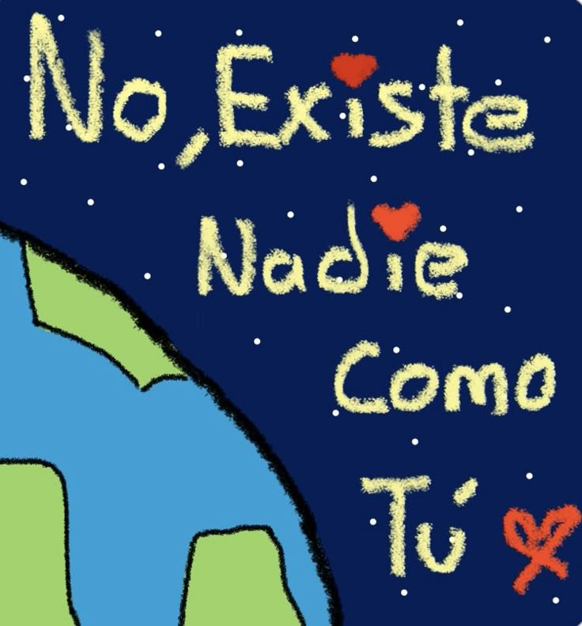

Para mi persona favorita
Desliza hacia abajo ❤️
"Todo comenzó como un sueño, mirando las estrellas..."

"Y ahora, sin importar la hora del día..."

"Cada noche te conviertes en mi mayor anhelo..."

"Entre tanta gente, mis ojos solo te buscan a ti..."

"Porque sé que eres un ser único..."

"Sueño con todas las cosas que haremos..."

"Paso a paso, a tu lado..."

"Porque en todo el universo..."

Te Amo
Toca el corazón